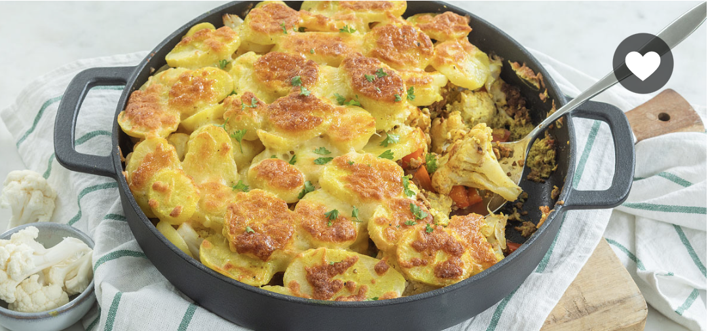
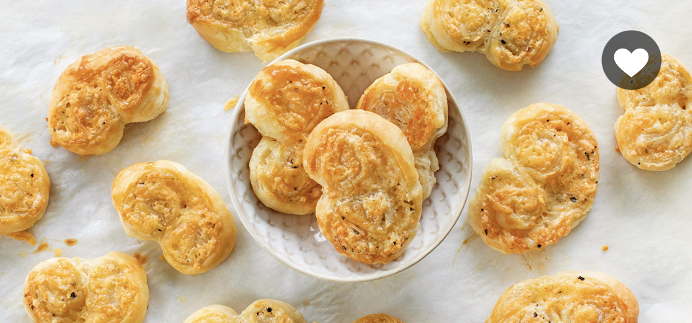
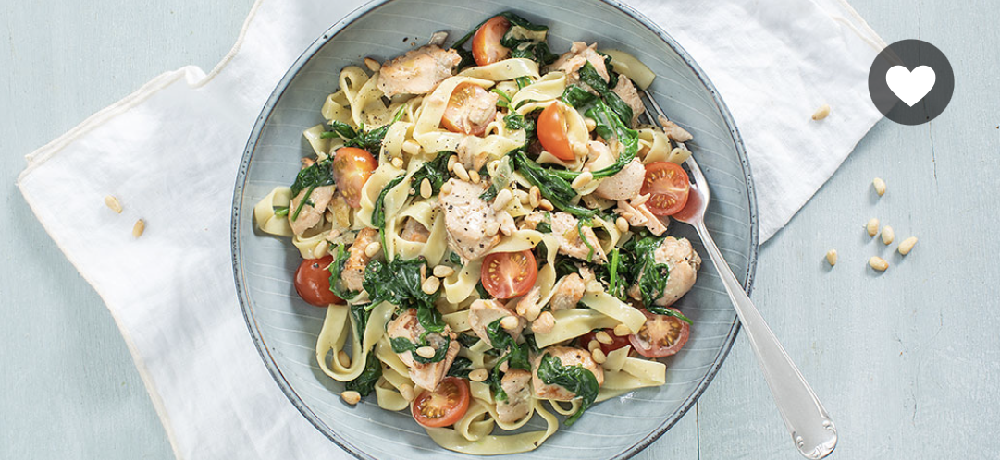
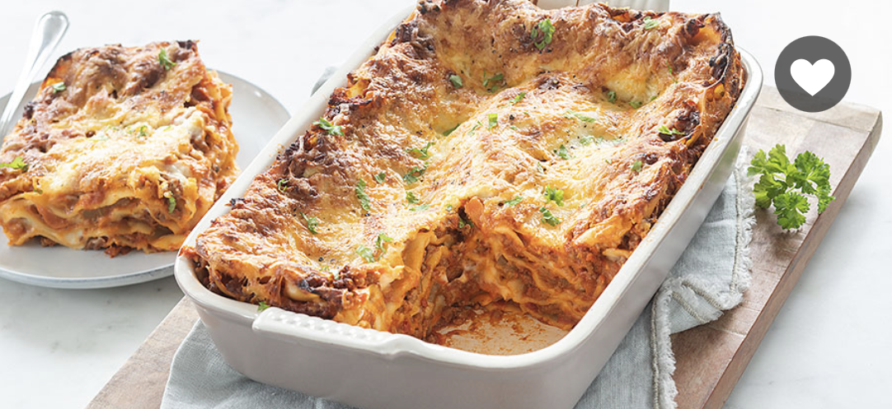
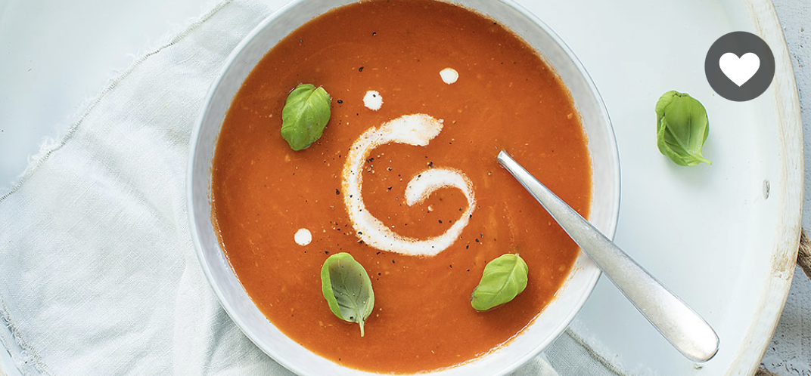
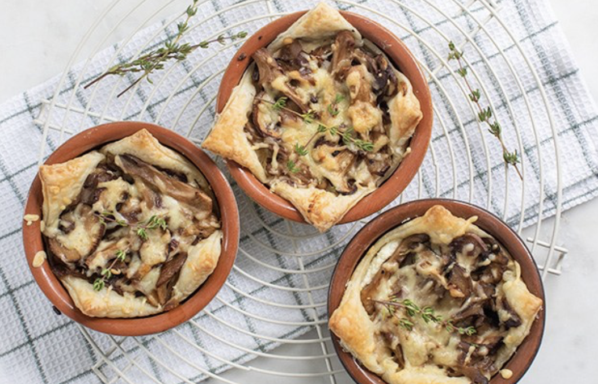
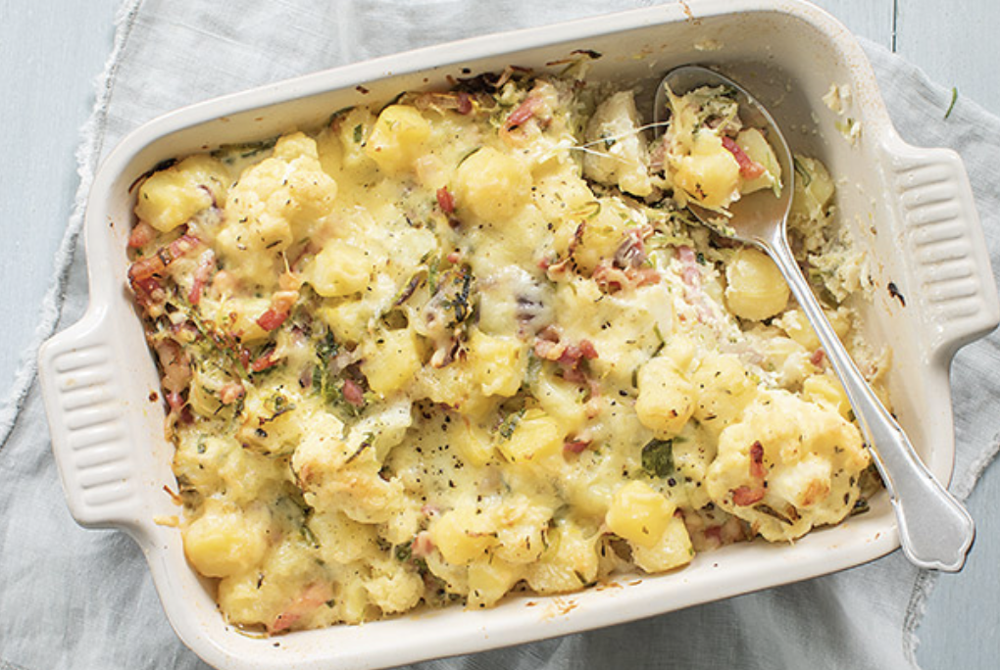
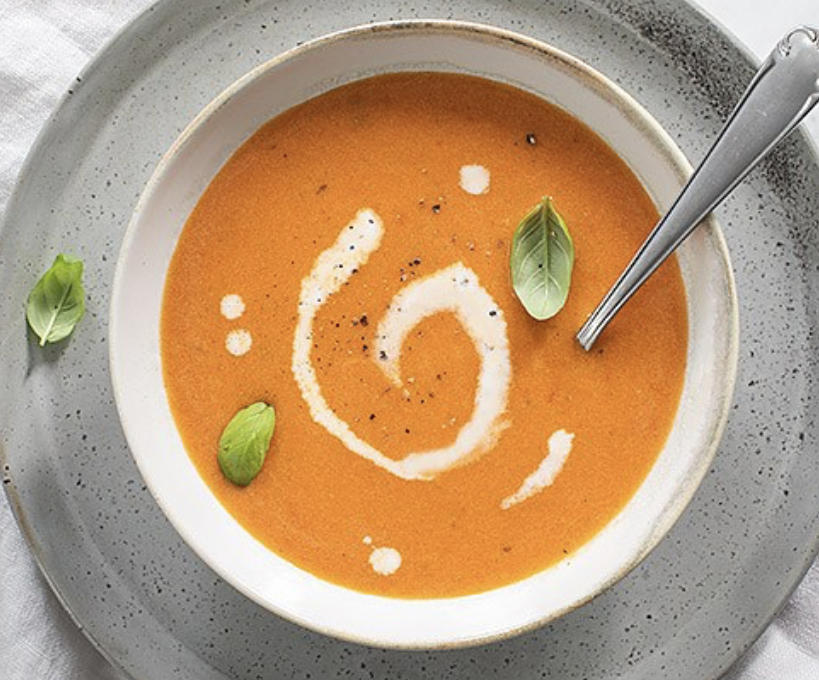

Nieuwe recepten & blogs
-

Bloemkool met kerrie uit de oven
-

Vegan monchou taart
-

Kaasvlinders
-

Gnocchi in truffelsaus
Bewaar je recepten
Ik ben Sandra en welkom op mijn site. Mijn missie is: plezier in de keuken & genieten aan tafel! Tip: maak een gratis account aan voor vele extra's:
- Sla al je favoriete recepten op in je eigen collecties
- Maak notities bij recepten
- Meld je aan voor een persoonlijk weekmenu
- Gratis E-book
Populairste recepten van de maand
-

Pompoensoep
-

Bananenbrood gezond recept
-
Wraps met kip
-

Pasta met zalm en spinazie
-

Lasagne bolognese
-

Verse tomatensoep
Leuke recepten webshop
Bekijk nu al mijn favoriete producten en merken in onze eigen webshop. Van pannen tot ovenschalen en van messen tot leuke cadeaus.
- De leukste kook & bak artikelen
- Snel verzonden en in huis
- Combi deals
Populaire thema's
-

Budgetrecepten
-

Herfstrecepten
-

Ovenschotels
-

Vegetarische recepten
-

Soepen
-

Pasta recepten
-

Bakrecepten
-

Stoofschotels
De nieuwste recepten in je mail?
Ontvang elke twee weken de gratis nieuwsbrief met de nieuwste recepten en tips!